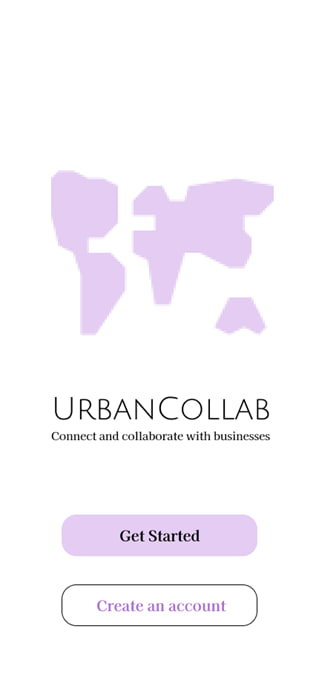

UrbanCollab
A cross-platform mobile app concept built with Dart and Flutter to support Singapore's Smart Nation direction through business productivity features such as events, workshops, launches, feedback, and user profiles.

UrbanCollab was created for a module focused on Cross Platform Mobile App Development. The objective was to develop a mobile app that supports Singapore's Smart Nation initiative, so I proposed a concept centered on business productivity and community participation.
The app was designed to let users access events and workshops, keep up with product launches, engage with other people, provide feedback, and manage their profiles within one mobile experience. Dart and Flutter were the main technologies used to shape the app concept into a cross-platform interface.
App concept
- Designed as a business productivity mobile app with a collaborative urban community angle.
- Built around the idea of helping users discover useful activities, updates, and people in one place.
- Framed as a contribution to the broader Smart Nation direction through digital engagement.
Main features
- Users could browse events and workshops relevant to their interests.
- The app included product launch visibility so users could keep up with new developments.
- Users could engage with others, give feedback, and manage their own profiles.
Technical approach
- Used Dart as the main programming language for the mobile application.
- Used Flutter to structure and present the cross-platform app interface.
- Focused on turning a concept proposal into a coherent mobile user journey with multiple screens.